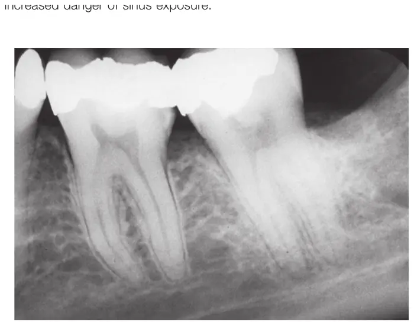

نسخه استخراجشده؛ ترجمه یا تأیید علمی انجام نشده است. وضعیت: captured
مولرهای سوم نهفتهی مندیبل اغلب ریشههایی دارند که در رادیوگرافی روی کانال آلوئولار تحتانی سوپرایمپوز میشوند.

و یک نکتهی آناتومیک که تسکیندهنده است ولی خیال را کاملاً راحت نمیکند: کانال معمولاً در سمت باکال دندان قرار دارد — ولی با این حال در مجاورت ریشههاست.
پس یکی از عوارض بالقوه، آسیب به عصب آلوئولار تحتانی است. پیامدش معمولاً تغییر حس (پارستزی یا بیحسی) لب و چانهی سمت آسیبدیده است.
طیف زمانی این تغییر حس: معمولاً کوتاه و تنها چند روز است، ولی میتواند هفتهها یا ماهها ادامه یابد، و در موارد نادر میتواند دائمی باشد. مدت آن به وسعت آسیب عصب بستگی دارد.
و پیامد عملی: اگر انتهای ریشههای دندان در رادیوگرافی نزدیک کانال آلوئولار تحتانی به نظر برسند، جراح باید دقت ویژهای برای پرهیز از آسیب به عصب به خرج دهد — و همین سختی عمل را بهشدت بالا میبرد.
نقش CBCT: در دسترس بودن CBCT، رابطهی ریشه و کانال را پیش از عمل بهمراتب واضحتر نشان میدهد، و همین به هدایت تصمیمهای جراحی کمک میکند.
حالا که همهی عوامل دشواری را دیدهای، ارزش دارد یک بار دیگر ساختار این دو فهرست را نگاه کنی — چون خودِ ساختار یک درس مستقل است.
عوامل آسانکننده و اینکه هر کدام از کجا میآیند:
عوامل دشوارکننده، با همان تفکیک:
و نتیجهای که از این تفکیک بیرون میآید: کلیشه به تو هندسه را میگوید و تاریخ تولد بیمار بیولوژی را. هیچکدام جای دیگری را نمیگیرد. جراحی که فقط کلیشه را میخواند، نیمی از تصویر را دارد.
و یادآوری آخر دربارهی طبقهبندی بافت پوشاننده: هرچند گسترده به کار میرود، اغلب هیچ ارتباطی با سختی کشیدن یا احتمال عوارض ندارد. پارامترهای زاویه، رابطه با راموس، مورفولوژی ریشه و سن بیمار برای طرح درمان بهمراتب مرتبطترند. جراح باید از همهی اطلاعات موجود استفاده کند.